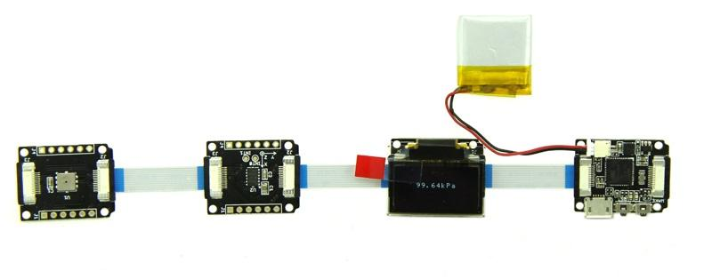

For this demo, you need to use the:
Connect them with FFC Cables, then you need to do some preparations that refer to the first Demo's steps. Differ from the demo1, you need to download the library:Smile and directly open SMILE INO file.
This demo functions: In normal circumstances, the OLED displays the current barometric pressure value. When you shake the Xadow Accelerometer, there will appear a smile face on the screen.
Note: Before uploading the code：smile to Xadow main board, please make sure there are the library:OLED_Display12864 and DigitalAccelerometer_ADX345 in the Arduino Library. If not, please download them and put them on the libraries file of Arduino IDE by the path: ..\arduino-1.0.1\libraries after unzipping. Do not forget to select Seeed Xadow from the Tools | Board menu of the Arduino environment.
